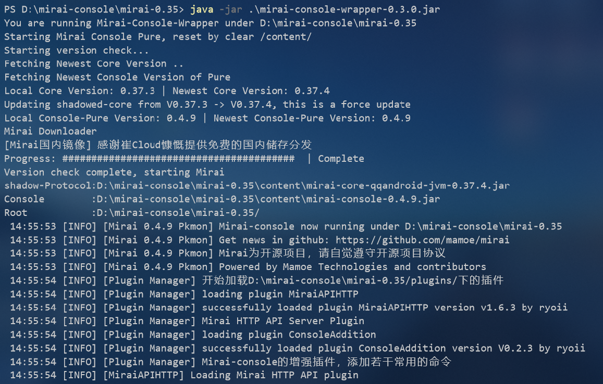
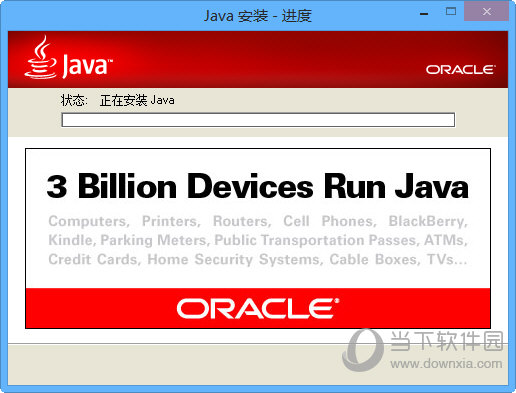
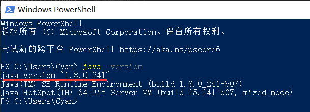
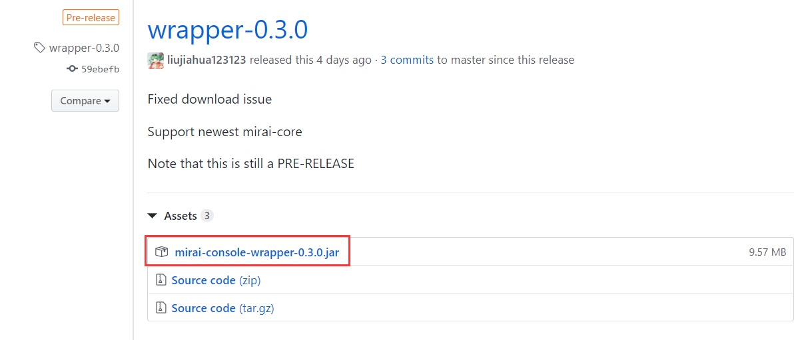
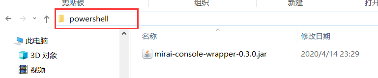
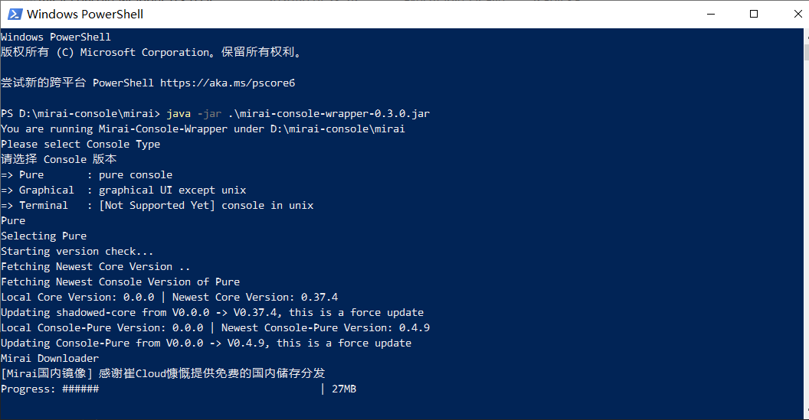
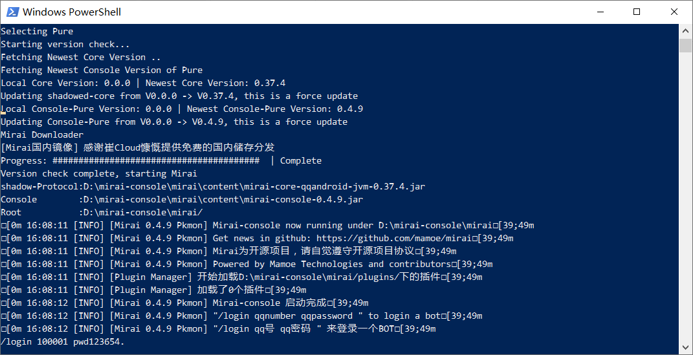

<!DOCTYPE html>
<html>
<head><meta name="generator" content="Hexo 3.9.0">
  <!-- hexo-inject:begin --><!-- hexo-inject:end --><meta charset="utf-8">
  <meta http-equiv="X-UA-Compatible" content="IE=edge">
  
  <title>开源安卓QQ协议库 mirai 使用教程 | uint128&#39;s Blog</title>
  <meta name="description" content="uint128&#39;s blog">
  <meta name="keywords" content="uint128,uint128&#39;s blog,uint128.com">
  <meta name="HandheldFriendly" content="True">
  <meta name="apple-mobile-web-app-capable" content="yes">
  <link rel="shortcut icon" href="/">
  <link rel="alternate" href="/atom.xml" title="uint128's Blog">
  <meta name="viewport" content="width=device-width, initial-scale=1, maximum-scale=1">
  <meta name="description" content="简单的入门教程, 适合无基础小白。因水平有限，本文内容可能会有错误，还请指正。">
<meta name="keywords" content="uint128,uint128&#39;s blog,uint128.com">
<meta property="og:type" content="article">
<meta property="og:title" content="开源安卓QQ协议库 mirai 使用教程">
<meta property="og:url" content="https://uint128.com/2020/04/18/开源安卓QQ协议库-mirai-使用教程/index.html">
<meta property="og:site_name" content="uint128&#39;s Blog">
<meta property="og:description" content="简单的入门教程, 适合无基础小白。因水平有限，本文内容可能会有错误，还请指正。">
<meta property="og:locale" content="zh-cn">
<meta property="og:image" content="https://uint128.com/2020/04/18/开源安卓QQ协议库-mirai-使用教程/pic/mirai_console_running.png">
<meta property="og:image" content="https://uint128.com/2020/04/18/开源安卓QQ协议库-mirai-使用教程/pic/installing_jre_1_8.jpg">
<meta property="og:image" content="https://uint128.com/2020/04/18/开源安卓QQ协议库-mirai-使用教程/pic/java_version.png">
<meta property="og:image" content="https://uint128.com/2020/04/18/开源安卓QQ协议库-mirai-使用教程/pic/github_mirai_console_wrapper.png">
<meta property="og:image" content="https://uint128.com/2020/04/18/开源安卓QQ协议库-mirai-使用教程/pic/execute_mirai_console_wrapper_1.png">
<meta property="og:image" content="https://uint128.com/2020/04/18/开源安卓QQ协议库-mirai-使用教程/pic/execute_mirai_console_wrapper_2.png">
<meta property="og:image" content="https://uint128.com/2020/04/18/开源安卓QQ协议库-mirai-使用教程/pic/execute_mirai_console_wrapper_3.png">
<meta property="og:updated_time" content="2020-07-18T11:26:51.122Z">
<meta name="twitter:card" content="summary">
<meta name="twitter:title" content="开源安卓QQ协议库 mirai 使用教程">
<meta name="twitter:description" content="简单的入门教程, 适合无基础小白。因水平有限，本文内容可能会有错误，还请指正。">
<meta name="twitter:image" content="https://uint128.com/2020/04/18/开源安卓QQ协议库-mirai-使用教程/pic/mirai_console_running.png">
    
  <link href="https://fonts.googleapis.com/css?family=Inconsolata|Titillium+Web" rel="stylesheet">
  <link href="https://fonts.googleapis.com/css?family=Roboto+Mono" rel="stylesheet">
  <link href="//cdnjs.cloudflare.com/ajax/libs/node-waves/0.7.5/waves.min.css" rel="stylesheet">
  <link rel="stylesheet" href="/style.css">
  <script>
    function setLoadingBarProgress(num) {
      document.getElementById('loading-bar').style.width=num+"%";
    }
  </script>
  <script src="/js/md5.js"></script>
<link rel="alternate" href="/atom.xml" title="uint128's Blog" type="application/atom+xml"><!-- hexo-inject:begin --><!-- hexo-inject:end -->
</head>
</html>
<body>
  <!-- hexo-inject:begin --><!-- hexo-inject:end --><div id="loading-bar-wrapper">
  <div id="loading-bar"></div>
</div>


  <script>setLoadingBarProgress(20)</script> 
  <header class="l_header">
	<div class='wrapper'>
		<div class="nav-main container container--flex">
			<a class="logo flat-box" href='/' >
				uint128's Blog
			</a>
			<div class='menu'>
				<ul class='h-list'>
					
						<li>
							<a class='flat-box nav-home' href='/'>
								Home
							</a>
						</li>
					
						<li>
							<a class='flat-box nav-archives' href='/archives'>
								Archives
							</a>
						</li>
					
						<li>
							<a class='flat-box nav-about' href='/about'>
								About
							</a>
						</li>
					
				</ul>
				<div class='underline'></div>
			</div>
			
				<div class="m_search">
					<form name="searchform" class="form u-search-form">
						<input type="text" class="input u-search-input" placeholder="Search" />
						<span class="icon icon-search"></span>
					</form>
				</div>
			
			<ul class='switcher h-list'>
				
					<li class='s-search'><a href='javascript:void(0)'><span class="icon icon-search flat-box"></span></a></li>
				
				<li class='s-menu'><a href='javascript:void(0)'><span class="icon icon-menu flat-box"></span></a></li>
			</ul>
		</div>
		
		<div class='nav-sub container container--flex'>
			<a class="logo" class="flat-box" href='javascript:void(0)'>
				Word of Forks
			</a>

			<ul class='switcher h-list'>
				<li class='s-comment'><a href='javascript:void(0)'><span class="icon icon-chat_bubble_outline flat-box"></span></a></li>
				<li class='s-top'><a href='javascript:void(0)'><span class="icon icon-arrow_upward flat-box"></span></a></li>
				<li class='s-toc'><a href='javascript:void(0)'><span class="icon icon-format_list_numbered flat-box"></span></a></li>
			</ul>
		</div>
	</div>
</header>
<aside class="menu-phone">
	<nav>
		
			<a href="/" class="nav-home nav">
				Home
			</a>
		
			<a href="/archives" class="nav-archives nav">
				Archives
			</a>
		
			<a href="/about" class="nav-about nav">
				About
			</a>
		
	</nav>
</aside>

    <script>setLoadingBarProgress(40);</script>
  <div class="l_body">
    <div class='container clearfix'>
      <div class='l_main'>
        <article id="post-开源安卓QQ协议库-mirai-使用教程"
  class="post white-box article-type-post"
  itemscope itemprop="blogPost">
	<section class='meta'>
	<h2 class="title">
  	<a href="/2020/04/18/开源安卓QQ协议库-mirai-使用教程/">
    	开源安卓QQ协议库 mirai 使用教程
    </a>
  </h2>
	<time>
	  4月 18, 2020
	</time>
	
	</section>
	
		<section class="toc-wrapper"><ol class="toc"><li class="toc-item toc-level-1"><a class="toc-link" href="#mirai-项目简介"><span class="toc-number">1.</span> <span class="toc-text">mirai 项目简介</span></a></li><li class="toc-item toc-level-1"><a class="toc-link" href="#在-windows-上使用-mirai-console"><span class="toc-number">2.</span> <span class="toc-text">在 windows 上使用 mirai-console</span></a><ol class="toc-child"><li class="toc-item toc-level-2"><a class="toc-link" href="#准备运行环境"><span class="toc-number">2.1.</span> <span class="toc-text">准备运行环境</span></a></li><li class="toc-item toc-level-2"><a class="toc-link" href="#下载-mirai-console-wrapper"><span class="toc-number">2.2.</span> <span class="toc-text">下载 mirai-console-wrapper</span></a></li><li class="toc-item toc-level-2"><a class="toc-link" href="#安装插件"><span class="toc-number">2.3.</span> <span class="toc-text">安装插件</span></a><ol class="toc-child"><li class="toc-item toc-level-3"><a class="toc-link" href="#自动安装插件"><span class="toc-number">2.3.1.</span> <span class="toc-text">自动安装插件</span></a></li><li class="toc-item toc-level-3"><a class="toc-link" href="#手动安装插件"><span class="toc-number">2.3.2.</span> <span class="toc-text">手动安装插件</span></a></li></ol></li></ol></li><li class="toc-item toc-level-1"><a class="toc-link" href="#将-mirai-机器人部署到-Linux-服务器"><span class="toc-number">3.</span> <span class="toc-text">将 mirai 机器人部署到 Linux 服务器</span></a><ol class="toc-child"><li class="toc-item toc-level-2"><a class="toc-link" href="#准备运行环境-1"><span class="toc-number">3.1.</span> <span class="toc-text">准备运行环境</span></a></li><li class="toc-item toc-level-2"><a class="toc-link" href="#开始使用"><span class="toc-number">3.2.</span> <span class="toc-text">开始使用</span></a></li><li class="toc-item toc-level-2"><a class="toc-link" href="#进阶使用"><span class="toc-number">3.3.</span> <span class="toc-text">进阶使用</span></a></li></ol></li></ol></section>
	
	<section class="article typo">
  	<div class="article-entry" itemprop="articleBody">
    	<p>简单的入门教程, 适合无基础小白。因水平有限，本文内容可能会有错误，还请指正。<br><a id="more"></a></p>
<h1 id="mirai-项目简介"><a href="#mirai-项目简介" class="headerlink" title="mirai 项目简介"></a>mirai 项目简介</h1><p>&emsp;&emsp;Mirai 是一个在全平台下运行, 提供 QQ Android 和 TIM PC 协议支持的高效率机器人框架(官方定义)。实际上因为一些原因,  TIM PC 协议停止更新了。目前功能最齐全, 运行最稳定的是 QQ Android 协议。(mirai 项目地址: <a href="https://github.com/mamoe/mirai" target="_blank" rel="noopener">Github</a> )</p>
<p>&emsp;&emsp;mirai 是由 Kotlin 编写的协议库, 提供使用 QQ Android 协议的一些 API。但是 mirai 本身<strong>不是</strong>一个 <strong>“QQ机器人”</strong> 程序, 而是一个库。与机器人软件 <strong>酷Q</strong> 对标的应该是 mirai 官方的衍生项目 <strong>mirai-console</strong>。(mirai-console 项目地址: <a href="https://github.com/mamoe/mirai-console" target="_blank" rel="noopener">Github</a> )</p>
<p></p>
<p><strong><center>图 1 mirai-console 运行时截图</center></strong></p>
<p>&emsp;&emsp;<strong>mirai-console</strong> 提供了插件系统, 支持安装 由 Java/Kotlin 编写的 <strong>mirai-console</strong> 插件。如果安装 <strong>mirai-native</strong> 插件, 那还可以支持 酷Q 的插件, 但是目前为止机制还不够完善, 需要将 酷Q 的插件重新编译为 dll 才能给 <strong>mirai-native</strong> 使用。( <strong>mirai-native</strong> 项目地址: <a href="https://github.com/iTXTech/mirai-native" target="_blank" rel="noopener">Github</a> )。安装 <strong>mirai-http-api</strong> 插件, 则可以提供 HTTP API 来使用 mirai, 方便其他语言使用 mirai。( <strong>mirai-http-api</strong> 项目地址: <a href="https://github.com/mamoe/mirai-api-http" target="_blank" rel="noopener">Github</a> )</p>
<h1 id="在-windows-上使用-mirai-console"><a href="#在-windows-上使用-mirai-console" class="headerlink" title="在 windows 上使用 mirai-console"></a>在 windows 上使用 mirai-console</h1><h2 id="准备运行环境"><a href="#准备运行环境" class="headerlink" title="准备运行环境"></a>准备运行环境</h2><p>&emsp;&emsp;运行 <strong>mirai-console</strong> 需要安装 Java 运行环境。安装 <strong>jre1.8</strong> (或 <strong>jdk8</strong>) 以及更高版本都可以。(jre1.8 安装包下载地址: <a href="https://www.baidu.com/s?wd=jre%201.8" target="_blank" rel="noopener">baidu</a> ; jdk8安装包下载地址: <a href="https://www.baidu.com/s?wd=jdk%201.8" target="_blank" rel="noopener">baidu</a> )</p>
<p></p>
<p><strong><center>图 2 安装 Java 运行环境(jre)截图</center></strong></p>
<p>&emsp;&emsp;安装完成后, 重启计算机。打开 <strong>Powershell</strong>, 输入 <code>java -version</code> 或者 <code>java --version</code> 然后回车, 查看是否正确安装 Java。正确安装 Java 并执行上面的指令后, 其结果应该如 <strong>图 3</strong> 所示。</p>
<blockquote>
<p>打开 Powershell 的方法: 同时按下键盘上的 <strong>Win</strong> 按键 (印着 windows 图标的按键) 和 <strong>字母 R</strong> 按键, 这会启动 “运行” 程序。输入 <code>powershell</code> 然后点击确定, 就可以打开 Powershell。</p>
</blockquote>
<p></p>
<p><strong><center>图 3 执行 java -version 截图</center></strong></p>
<h2 id="下载-mirai-console-wrapper"><a href="#下载-mirai-console-wrapper" class="headerlink" title="下载 mirai-console-wrapper"></a>下载 mirai-console-wrapper</h2><p>&emsp;&emsp;前面介绍了 mirai-console 才是真正的 <strong>“QQ 机器人程序”</strong>。但是为了方便使用 <strong>mirai-console</strong> 总共有 6 个版本, 各个版本的说明可以见 <strong>表 1</strong>。</p>
<p><strong>表 1 mirai-console 各个版本的介绍</strong></p>
<div class="table-container">
<table>
<thead>
<tr>
<th style="text-align:center">名称</th>
<th style="text-align:center">介绍</th>
</tr>
</thead>
<tbody>
<tr>
<td style="text-align:center">Mirai-Console-Pure</td>
<td style="text-align:center">最纯净版, CLI环境, 通过标准输入与标准输出 交互</td>
</tr>
<tr>
<td style="text-align:center">Mirai-Console-Terminal</td>
<td style="text-align:center">(UNIX)Terminal环境 提供简洁的富文本控制台</td>
</tr>
<tr>
<td style="text-align:center">Mirai-Console-Android</td>
<td style="text-align:center">安卓APP (TODO)</td>
</tr>
<tr>
<td style="text-align:center">Mirai-Console-Graphical</td>
<td style="text-align:center">JavaFX的图形化界面 (.jar/.exe/.dmg)</td>
</tr>
<tr>
<td style="text-align:center">Mirai-Console-WebPanel</td>
<td style="text-align:center">Web Panel操作(TODO)</td>
</tr>
<tr>
<td style="text-align:center">Mirai-Console-Ios</td>
<td style="text-align:center">IOS APP (TODO)</td>
</tr>
</tbody>
</table>
</div>
<p>&emsp;&emsp;根据不同的运行环境和需求, 选择对应的版本。因为本篇文章涉及到将 mirai-console 部署到 Linux, 这里以 Pure 版本为例进行讲解。</p>
<p>&emsp;&emsp;要使用 mirai-console-pure , 需要下载 mirai-console-wrapper 。mirai-console-wrapper 提供了安装、更新各个版本 mirai-console 的功能。</p>
<blockquote>
<p><strong>mirai-console-wrapper 的下载地址: <a href="https://github.com/mamoe/mirai-console/releases" target="_blank" rel="noopener">https://github.com/mamoe/mirai-console/releases</a></strong></p>
</blockquote>
<p>&emsp;&emsp;找到 wrapper 开头的标题, 下载最新版本的 <strong>mirai-console-wrapper.jar</strong> 文件。(如 <strong>图 4</strong> )</p>
<p></p>
<p><strong><center>图 4 mirai-console-wrapper 的下载地址</center></strong></p>
<p>&emsp;&emsp;将下载好的 mirai-console-wrapper 移动到合适的位置。在地址栏中输入 powershell 并回车, 这会在当前目录启动 Powershell。(如 <strong>图 5</strong>)</p>
<p></p>
<p><strong><center>图 5 准备执行 mirai-console-wrapper</center></strong></p>
<p>&emsp;&emsp;启动 Powershell 后, 输入 <code>java -jar .\mirai-console-wrapper-0.3.0.jar</code> 并回车启动 mirai-console-wrapper。</p>
<p>&emsp;&emsp;启动 mirai-console-wrapper 后, 它会让你选择安装哪个 mirai-console 版本, 本文要安装 Pure 版本, 所以这里输入了 Pure。你可以按照你的需求来选择版本。</p>
<p>&emsp;&emsp;输入 Pure 并回车, mirai-console-wrapper 会自动从服务器下载最新版的 mirai-console 和 mirai 库 (保存在 content 文件夹里)。并会自动创建 plugins 文件夹, 这个文件夹用于存放插件和插件的配置文件。</p>
<p></p>
<p><strong><center>图 6 正在下载 mirai-console-pure</center></strong></p>
<p>&emsp;&emsp;等待下载完成后, 会显示如图 7的结果, 这就说明成功的启动了 mirai-console-pure。</p>
<p></p>
<p><strong><center>图 7 正在下载 mirai-console-pure</center></strong></p>
<p>&emsp;&emsp;直接输入 <code>/login 你的机器人的qq号码 你的机器人的qq密码</code> 然后回车确认, 就能登录QQ机器人了。</p>
<h2 id="安装插件"><a href="#安装插件" class="headerlink" title="安装插件"></a>安装插件</h2><h3 id="自动安装插件"><a href="#自动安装插件" class="headerlink" title="自动安装插件"></a>自动安装插件</h3><p>&emsp;&emsp;输入 <code>/help</code> 可以查看 mirai-console-pure 的指令。这个指令列表是会变化的, 比如有的插件会提供一些指令。</p>
<figure class="highlight plain"><table><tr><td class="gutter"><pre><span class="line">1</span><br><span class="line">2</span><br><span class="line">3</span><br><span class="line">4</span><br><span class="line">5</span><br><span class="line">6</span><br><span class="line">7</span><br><span class="line">8</span><br><span class="line">9</span><br></pre></td><td class="code"><pre><span class="line">-&gt; manager :Add a manager</span><br><span class="line">-&gt; login :机器人登录</span><br><span class="line">-&gt; status :获取状态</span><br><span class="line">-&gt; say :聊天功能演示</span><br><span class="line">-&gt; plugins :获取插件列表</span><br><span class="line">-&gt; command :获取指令列表</span><br><span class="line">-&gt; about :About Mirai-Console</span><br><span class="line">-&gt; reload :重新加载全部插件</span><br><span class="line">-&gt; install :Install plugin from PluginCenter</span><br></pre></td></tr></table></figure>
<p>&emsp;&emsp;输入 <code>/install</code> 可以查看插件列表。</p>
<figure class="highlight plain"><table><tr><td class="gutter"><pre><span class="line">1</span><br><span class="line">2</span><br><span class="line">3</span><br><span class="line">4</span><br><span class="line">5</span><br><span class="line">6</span><br><span class="line">7</span><br><span class="line">8</span><br></pre></td><td class="code"><pre><span class="line">=&gt;BiliBiliLinker ;作者: Karlatemp ;介绍: 解析BiliBili视频信息</span><br><span class="line">=&gt;DrawLots ;作者: Sincky ;介绍: 群抽签解签插件, 抽取当天玄学的运势, 遇事不决, 量子力学</span><br><span class="line">=&gt;History ;作者: Logiase ;介绍: 记录本地聊天记录</span><br><span class="line">=&gt;HsoPro ;作者: unknown ;介绍: 支持群内看高清涩图, 允许配置每个群允许,不允许看普通/r18的图</span><br><span class="line">=&gt;KeywordReply ;作者: Anders ;介绍: 群内关键字回复, 可选择精准问答或模糊问答, 分群配置</span><br><span class="line">=&gt;PingMyMcServer ;作者: NaturalHG ;介绍: 在QQ中ping MCPE服务器</span><br><span class="line">=&gt;Rcon ;作者: Angel、 ;介绍: 对服务器发送命令, 可在QQ群内或私聊执行服务器命令。</span><br><span class="line">=&gt;Runcode ;作者: Simper16 ;介绍: 在线运行代码</span><br></pre></td></tr></table></figure>
<p>&emsp;&emsp;输入 <code>/install 插件名称</code> 如: <code>/install Rcon</code> 就可以安装插件。</p>
<figure class="highlight plain"><table><tr><td class="gutter"><pre><span class="line">1</span><br><span class="line">2</span><br><span class="line">3</span><br></pre></td><td class="code"><pre><span class="line">[INFO] [Command] 正在连接崔云</span><br><span class="line">[INFO] [Command] 正在安装Rcon</span><br><span class="line">[INFO] [Command] 安装Rcon成功</span><br></pre></td></tr></table></figure>
<h3 id="手动安装插件"><a href="#手动安装插件" class="headerlink" title="手动安装插件"></a>手动安装插件</h3><p>&emsp;&emsp;有几个很重要的插件没有出现在列表里, 接下来介绍手动安装插件。</p>
<p>&emsp;&emsp;<strong>mirai-http-api</strong> 插件会在本地运行一个Web服务器, 从而提供 HTTP API。这允许其他程序通过 HTTP API 来使用 mirai。安装了它, 就可以运行各种编程语言编写的插件。(按理说这类插件会很多, 但是目前来说这类插件比较少, 因为各个大佬都自己玩, 少有发布插件的)</p>
<blockquote>
<p><strong>mirai-http-api</strong> 插件下载地址: <a href="https://github.com/mamoe/mirai-api-http/releases" target="_blank" rel="noopener">https://github.com/mamoe/mirai-api-http/releases</a></p>
</blockquote>
<p>&emsp;&emsp;<strong>mirai-console-addition</strong> 插件增强了 mirai-console 的功能, 它提供了 MD5密码登录 以及 MD5密码自动登录 等功能。</p>
<blockquote>
<p><strong>mirai-console-addition</strong> 插件下载地址: <a href="https://github.com/ryoii/mirai-console-addition/releases" target="_blank" rel="noopener">https://github.com/ryoii/mirai-console-addition/releases</a></p>
</blockquote>
<p>&emsp;&emsp;以 <strong>mirai-console-addition</strong> 为例, 下载最新版的 <strong>mirai-console-addition-V0.2.3.jar</strong> , 将它复制到 <strong>plugins</strong> 目录下。</p>
<p>&emsp;&emsp;重新启动 mirai-console-wrapper, 该插件即可生效。</p>
<p>&emsp;&emsp;此时再次输入 <code>/help</code>, 可以发现比原来多出了几个指令: </p>
<figure class="highlight plain"><table><tr><td class="gutter"><pre><span class="line">1</span><br><span class="line">2</span><br><span class="line">3</span><br><span class="line">4</span><br><span class="line">5</span><br><span class="line">6</span><br><span class="line">7</span><br><span class="line">8</span><br><span class="line">9</span><br><span class="line">10</span><br><span class="line">11</span><br><span class="line">12</span><br></pre></td><td class="code"><pre><span class="line">-&gt; manager :Add a manager</span><br><span class="line">-&gt; login :机器人登录</span><br><span class="line">-&gt; status :获取状态</span><br><span class="line">-&gt; say :聊天功能演示</span><br><span class="line">-&gt; plugins :获取插件列表</span><br><span class="line">-&gt; command :获取指令列表</span><br><span class="line">-&gt; about :About Mirai-Console</span><br><span class="line">-&gt; reload :重新加载全部插件</span><br><span class="line">-&gt; install :Install plugin from PluginCenter</span><br><span class="line">-&gt; login-md5 :[console addition]使用md5作为密码登录</span><br><span class="line">-&gt; auto-login :[console addition]自动保存本次登录的qq号和密码md5值, 下次启动时自动登录</span><br><span class="line">-&gt; rcon :rcon插件命令</span><br></pre></td></tr></table></figure>
<p>&emsp;&emsp;多出的 <strong>login-md5</strong> 和 <strong>auto-login</strong> 指令由 mirai-console-addition 插件提供。</p>
<h1 id="将-mirai-机器人部署到-Linux-服务器"><a href="#将-mirai-机器人部署到-Linux-服务器" class="headerlink" title="将 mirai 机器人部署到 Linux 服务器"></a>将 mirai 机器人部署到 Linux 服务器</h1><p>未完待续…</p>
<h2 id="准备运行环境-1"><a href="#准备运行环境-1" class="headerlink" title="准备运行环境"></a>准备运行环境</h2><h2 id="开始使用"><a href="#开始使用" class="headerlink" title="开始使用"></a>开始使用</h2><h2 id="进阶使用"><a href="#进阶使用" class="headerlink" title="进阶使用"></a>进阶使用</h2>
  	</div>
	  
		
	
		<div class="art-item-footer">
				
					<span class="art-item-left"><i class="icon icon-chevron-thin-left"></i>prev：<a href="/2020/07/18/翻译-控制台、终端和Shell的区别是什么？/" rel="prev"  title="[翻译]控制台、终端和Shell的区别是什么？">
						[翻译]控制台、终端和Shell的区别是什么？ 
					</a></span>
				
				
					<span class="art-item-right">next：<a href="/2020/04/13/数值积分辛普森法的推导以及MATLAB实现/" rel="next"  title="数值积分辛普森法的推导以及MATLAB实现">
						数值积分辛普森法的推导以及MATLAB实现
					</a><i class="icon icon-chevron-thin-right"></i></span>
				
		</div>
	
	</section>


	

</article>


	<div id="gitalk-container"></div>
	<link rel="stylesheet" href="https://unpkg.com/gitalk/dist/gitalk.css">

<script src="https://unpkg.com/gitalk/dist/gitalk.min.js"></script>

 <script type="text/javascript">
      var gitalk = new Gitalk({
        clientID: '53e3c578fcb7b7b1a4da',
        clientSecret: '74433ee77d6e13fd635b82add519e143ac791726',
        repo: 'cyanray.github.io',
        owner: 'cyanray',
        admin: ['cyanray'],
        id: CryptoJS.MD5(location.pathname).toString(),
        labels: ['Gitalk'],
        perPage: 15,
        pagerDirection: 'last',
        createIssueManually: true,
        distractionFreeMode: false
      })

      gitalk.render('gitalk-container')
 </script>


<script>
	window.subData = {
		title: '开源安卓QQ协议库 mirai 使用教程',
		tools: true
	}
</script>

      </div>
      <aside class='l_side'>
        
  <section class='m_widget about'>
    
            <div class='header'>
                uint128.com
            </div>
            <div class='content'>
                <div class='desc'>uint128, unsigned int.<br>Uint128 Is Not a Type with 128 bits.</div>
            </div>
</section>

  <section class='m_widget links'>
<div class='header'>Links</div>
<div class='content'>
    <ul class="entry">
    
        <li><a class="flat-box" target="_blank" href="https://github.com/cyanray">
            <div class='name'>My Github</div>
        </a></li>
    
        <li><a class="flat-box" target="_blank" href="https://yuanxingxing-yxx.github.io/">
            <div class='name'>星星的博客</div>
        </a></li>
    
        <li><a class="flat-box" target="_blank" href="http://www.h13studio.com/">
            <div class='name'>H13-Studio</div>
        </a></li>
    
        <li><a class="flat-box" target="_blank" href="http://quosimodo.cn/">
            <div class='name'>卡西莫多の礼物</div>
        </a></li>
    
        <li><a class="flat-box" target="_blank" href="http://www.dora-kong.com/">
            <div class='name'>哆啦控 - dora-kong.com</div>
        </a></li>
    
        <li><a class="flat-box" target="_blank" href="https://blog.icepie.net/">
            <div class='name'>icepie&#39;s blog</div>
        </a></li>
    
    </ul>
</div>
</section>

      </aside>
      <script>setLoadingBarProgress(60);</script>
    </div>
  </div>
  <footer id="footer" class="clearfix">

	<div class="social-wrapper">
  	
      
        <a href="https://github.com/cyanray" class="social github"
          target="_blank" rel="external">
          <span class="icon icon-github"></span>
        </a>
      
    
  </div>
  
  <div>Theme <a href='https://github.com/stkevintan/hexo-theme-material-flow' class="codename">MaterialFlow</a> designed by <a href="http://keyin.me/" target="_blank">Kevin Tan</a>.</div>
  
</footer>


  <script>setLoadingBarProgress(80);</script>
  

<script src="//apps.bdimg.com/libs/jquery/2.1.4/jquery.min.js"></script>
<script src='//cdnjs.cloudflare.com/ajax/libs/node-waves/0.7.5/waves.min.js'></script>
<script src="//cdnjs.cloudflare.com/ajax/libs/scrollReveal.js/3.3.2/scrollreveal.min.js"></script>
<script src="/js/jquery.fitvids.js"></script>
<script>
	var GOOGLE_CUSTOM_SEARCH_API_KEY = "";
	var GOOGLE_CUSTOM_SEARCH_ENGINE_ID = "";
	var ALGOLIA_API_KEY = "";
	var ALGOLIA_APP_ID = "";
	var ALGOLIA_INDEX_NAME = "";
  var AZURE_SERVICE_NAME = "";
  var AZURE_INDEX_NAME = "";
  var AZURE_QUERY_KEY = "";
  var BAIDU_API_ID = "";
  var SEARCH_SERVICE = "hexo";
  var ROOT = "/"||"/";
  if(!ROOT.endsWith('/'))ROOT += '/';
</script>
<script src="/js/search.js"></script>
<script src="/js/app.js"></script>


  
    <script type="text/x-mathjax-config">
      MathJax.Hub.Config({
          tex2jax: {
            inlineMath: [ ['$','$'], ["\\(","\\)"] ],
            processEscapes: true
          }
        });
      </script>
    
    <script type="text/x-mathjax-config">
      MathJax.Hub.Config({
            tex2jax: {
              skipTags: ['script', 'noscript', 'style', 'textarea', 'pre', 'code']
            }
          });
      </script>
    
    <script type="text/x-mathjax-config">
      MathJax.Hub.Queue(function() {
              var all = MathJax.Hub.getAllJax(), i;
              for(i=0; i < all.length; i += 1) {
                  all[i].SourceElement().parentNode.className += ' has-jax';
              }
          });
      </script>
    
    <script type="text/javascript" src="https://cdnjs.cloudflare.com/ajax/libs/mathjax/2.7.4/MathJax.js?config=TeX-MML-AM_CHTML">
    </script>
    
  <script>setLoadingBarProgress(100);</script><!-- hexo-inject:begin --><!-- Begin: Injected MathJax -->
<script type="text/x-mathjax-config">
  MathJax.Hub.Config("");
</script>

<script type="text/x-mathjax-config">
  MathJax.Hub.Queue(function() {
    var all = MathJax.Hub.getAllJax(), i;
    for(i=0; i < all.length; i += 1) {
      all[i].SourceElement().parentNode.className += ' has-jax';
    }
  });
</script>

<script type="text/javascript" src="https://cdnjs.cloudflare.com/ajax/libs/mathjax/2.7.4/MathJax.js?config=TeX-MML-AM_CHTML">
</script>
<!-- End: Injected MathJax -->
<!-- hexo-inject:end -->
</body>
</html>
